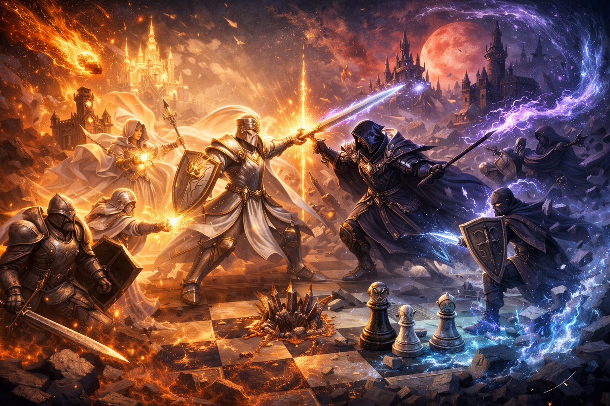

白のハイヤー（使用状況）
黒のハイヤー（使用状況）
ハイヤーバトル
白の手札（最大3枚）
黒の手札（最大3枚）

戦況
前ターンのリプレイ
まだ前ターンの情報はありません。
ログ
・手札があるターンは必ずハイヤーカードを1枚使用（先行1ターン目を除く）
・ハイヤー使用＋駒の移動 または ターン終了ボタンでターン終了
・ターン制限（60ターン）またはハイヤー切れ・全滅で勝敗判定
・ハイヤー使用＋駒の移動 または ターン終了ボタンでターン終了
・ターン制限（60ターン）またはハイヤー切れ・全滅で勝敗判定